express 프레임워크
express는 경량화 웹 개발 프레임 워크로, 노드를 이용한 웹 서비스나웹 애플리케이션 개발에 가장 널리 쓰이는 확장 모듈 중 하나이다.express는 기본 모듈 중 하나인 http 모듈을 이용하여 웹 서버를 구축하고 데이터를 표시하는 방식을 좀 더 추상화하여
웹 서비스나 웹 애플리케이션 개발을 더 편리하고 수월하게할 수 있도록 다양한 API를 제공한다.
Node.js에서의 구현과 동일하게 이벤트 처리를 통합해 가는 기본적인 개발 스타일은 변함이 없지만, 준비되어 있는
다양한 객체를 통해 쉽게 필요한 처리를 만들 수 있다.
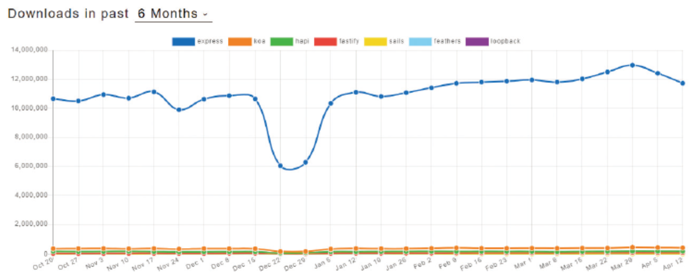
express 설치
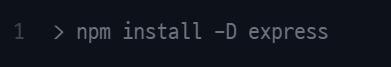
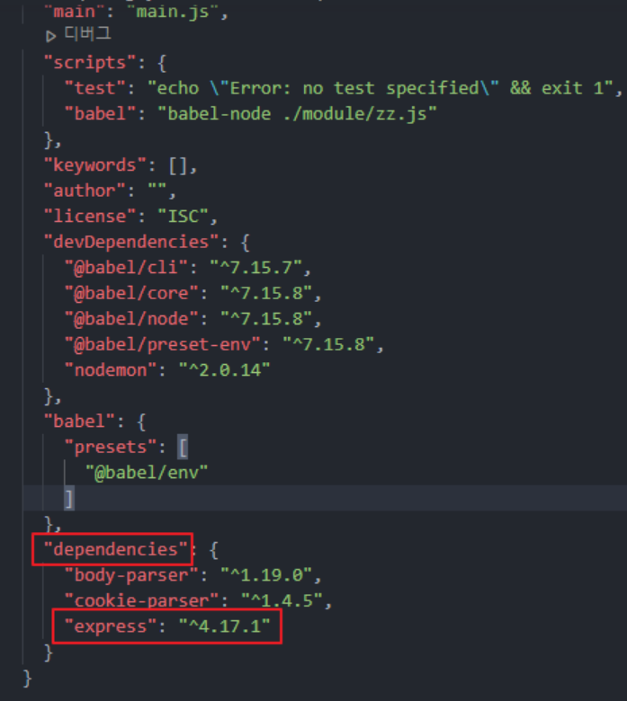
express 실행

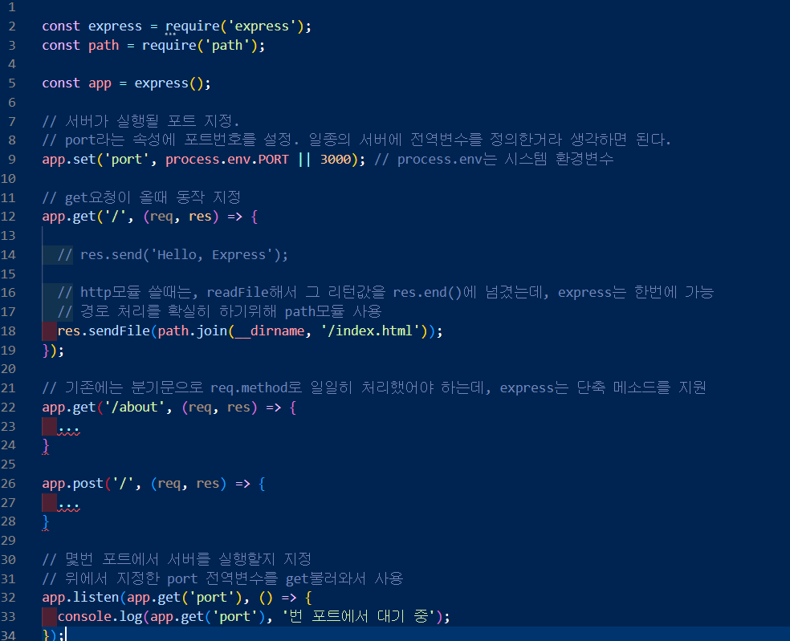
서버는 port 3000에서 사용자의 접속을 대기하고 있다.
클라이언트가 GET 방식으로 루트 URL (http://localhost:3000/)에 요청을 보내면 서버는 'Hello Express!'로 응답할 것이다.
미들웨어 작성
💡 [ Tip ]미들웨어는 익스프레스의 핵심이다.
요청과 응답의 중간(middle, 미들)에 위치하여 미들웨어라고 부른다.
미들웨어는 요청과 응답을 조작하여 기능을 추가하기도 하고, 나쁜 요청을 걸러내기도 한다.
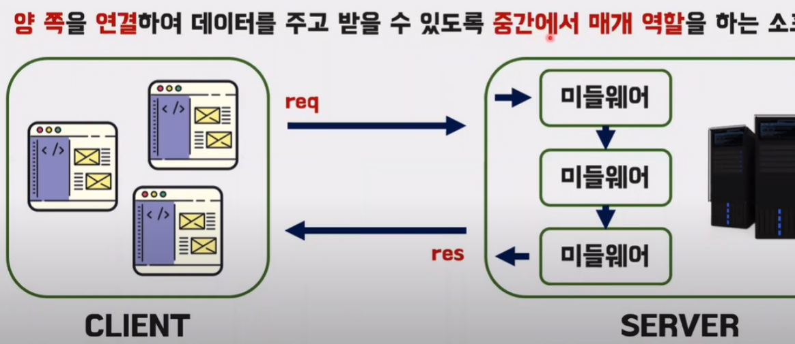
익스프레스 내에서 웹요청과 응답에 대한 정보를 사용해서 필요한 처리를 진행할 수 있도록분리된 독립적인 함수이다.
그리고 각각의 미들웨어는next()메소드를 호출해서 그 다음 미들웨어가 작업을 처리할 수 있도록 순서를 넘길수 있다.
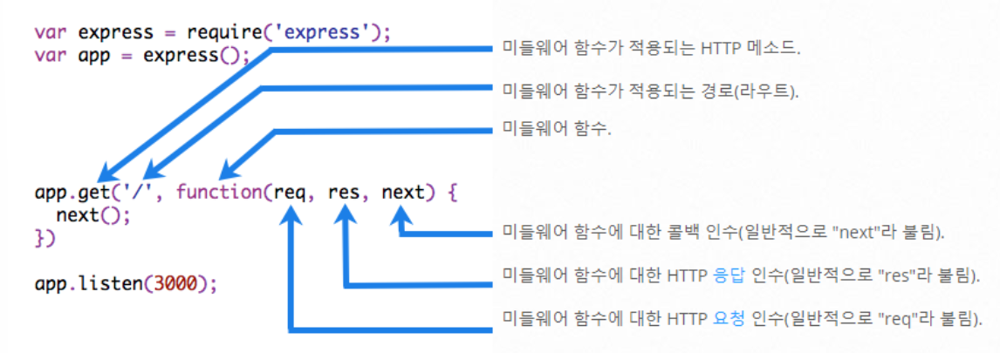
위 사진에서, function(req, res, next) {} 부분이 바로 미들웨어인 것이다.
⚠️뇌정지 당하기전의 예방지식!
노드를 배우면서 우리는함수 인자에 콜백함수가 들어가 있는 형태를 자주자주 봐왔다.
이 함수는 비동기 함수가 처리되고 그 결과를 나타내기 위한 콜백함수이다.
대표적으로 노드 모듈 메서드인 http.createServer() 가 있다.
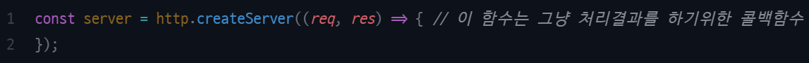
다음은 익스프레스 모듈 메서드인 app.get이다.
(req, res) => {}생김새가 매우매우 비슷하지만, 사실 완전히 다른 함수이다.
이 함수는 익스프레스 전용 미들웨어 함수이며, 위의 비동기 처리 콜백 기능과는 아무런 상관이 없다.
이 함수는 next()를 통해 작동한다. 이를 유의하자
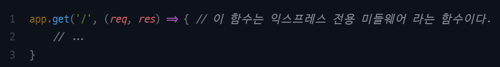
ⓘ 요청과 응답의 중간에 위치하여 미들웨어
ⓘ 미들웨어는 req, res, next가 매개변수인 함수
ⓘ 미들웨어 함수를 여러번 인자로쓸수 있다.
ⓘ req : 요청, res : 응답 조작 가능, next()로 다음 미들웨어로 넘어간다.
미들웨어 기본작성 예제)
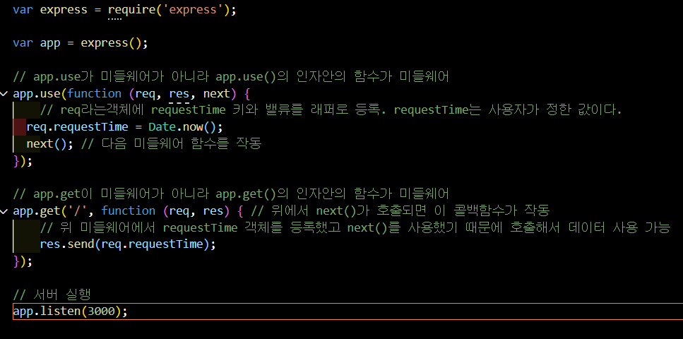
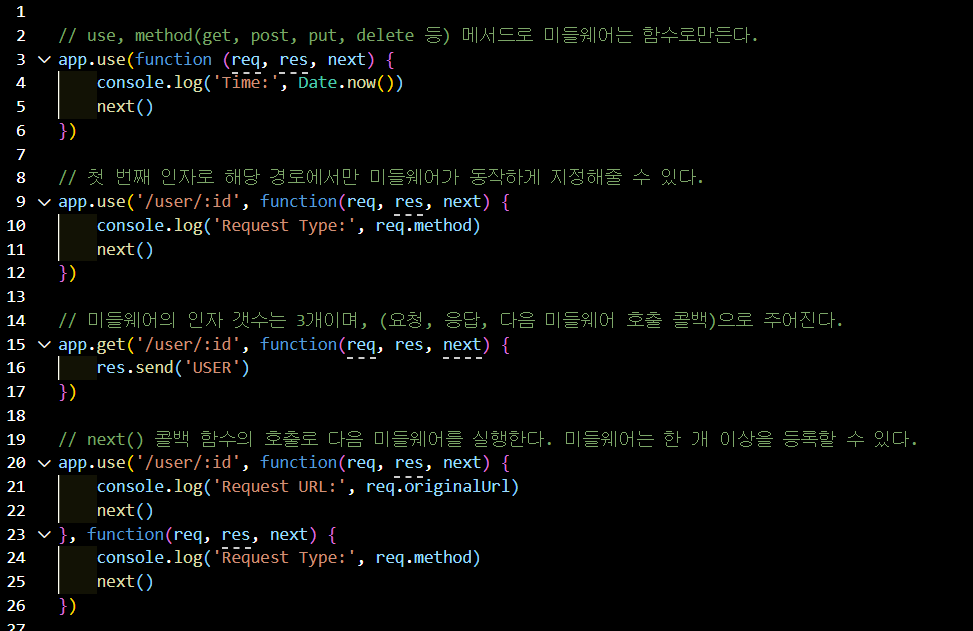
💡 [ Tip ]
app.use()
app.use()는 Express 앱에서 항상 실행하는 미들웨어 역할
app.get(), app.post()등과 달리 요청 URL을 지정하지 않아도 app.use()를 사용할 수 있으며 해당 경우에는 URL에 상관없이 매번 실행된다.
app.use() 및 app.Method() 함수를 이용해 응용프로그램 수준의 미들웨어를 app객체의 인스턴스에 바인딩Method=get or post
미들웨어 구조작성 예제)
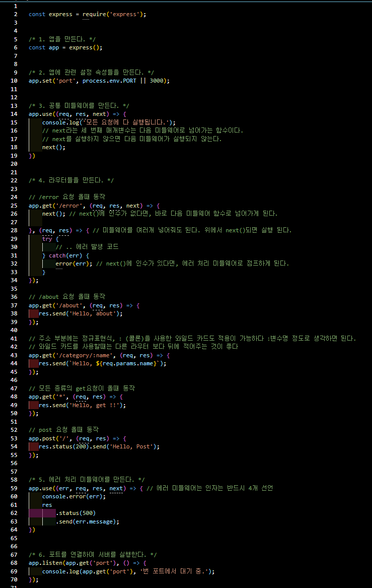
첫 번째 인수로 주소를 넣어주지 않는다면 미들웨어는 모든 요청에서 실행되고, 주소를 넣는다면 해당하는 요청에서만 실행된다.
아래와 같이 사용할 수 있다.
| app.use(미들웨어) | 모든 요청에서 해당 미들웨어 실행행 |
| app.use('/path', 미들웨어) | path로 시작하는 요청에서 미들웨어 실행 |
| app.post('/path', 미들웨어) | path로 시작하는 POST 요청에서 미들웨어 실행 |
에러 처리 미들웨어
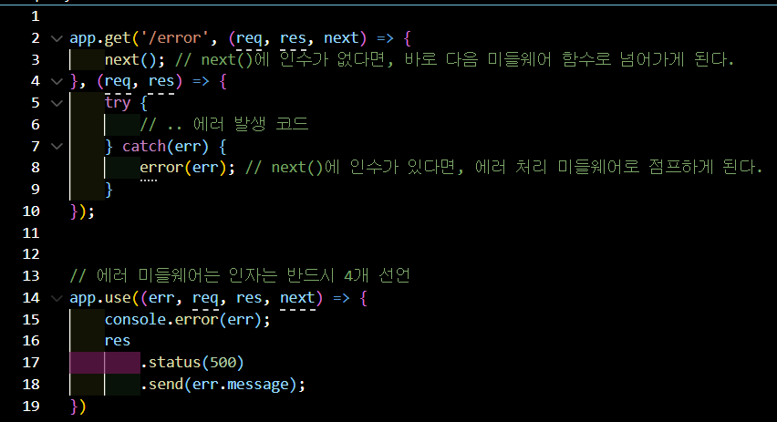
위 코드를 보면 app.get에는 미들웨어(콜백함수)가 두 개 연결되어 있다.
next를 호출하면 바로 다음 미들웨어로 넘어갈 수 있다.
그리고 두 번째 미들웨어에서 catch로 에러를 잡으면, next() 함수 인자를 주면, 바로 에러 처리 미들웨어로 점프하게된다.
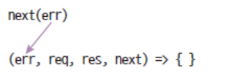
에러 처리 미들웨어는 매개변수가 err, req, res, next로 네 개다.
모든 매개변수를 사용하지 않더라도 매개변수가 반드시 네 개여야 한다.
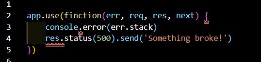
오류 처리 미들웨어는 항상 4 개의 인수를 사용
하나라도 생략되면 '일반 미들웨어'로 인식해버리므로 꼭 4개를 넣어주어야한다.
next()도 마찬가지이다.
미들웨어 next()
위에서 본 봐와 같이,next()를 하면 다음 미들웨어로 넘어가고, next(인수)를 하면 에러 핸들러로 넘어가게 된다.
또한, 한가지 특별한 기능이 있는데, next('route')를 하게 되면 다음 미들웨어가 아닌 다음 라우터로 넘어가게 된다.
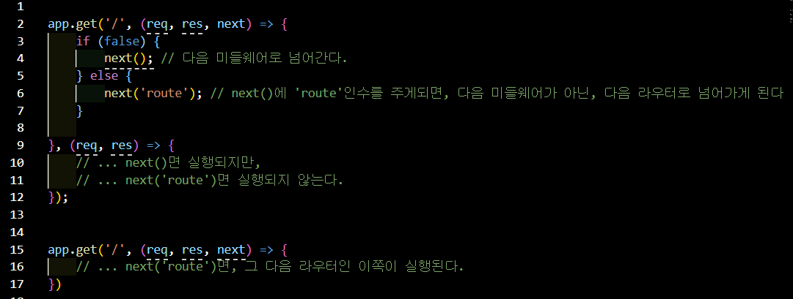
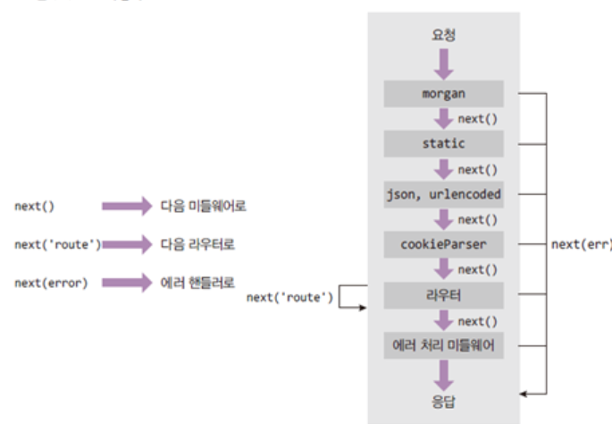
미들웨어 동작 원리
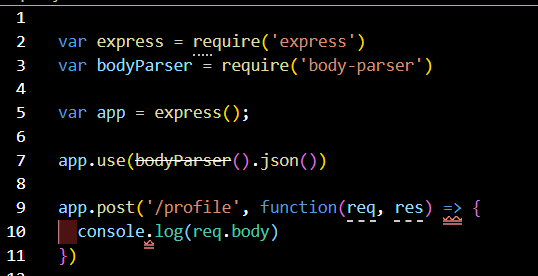body-parser 모듈을 불러오고 미들웨어 함수로서 사용되었다.
app.post()를 보니 req.body를 사용하는데, req객체에는 body라는 키는 원래 존재하지 않는다.
이 body라는 키와 밸류는 어디서 왔을까?
미들웨어의 특성들에 대해 알아보자.
미들웨너느 req, res, next를 매개변수로 가지는 함수 (에러 처리 미들웨어만 예외적으로 err, req, res, next)로써 app.use나 app.get, app.post 등으로 장착한다.
또한, 아래와 동시에 여러개의 미들웨어를 장착할 수도 있다.
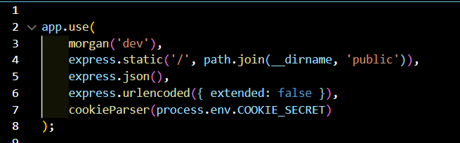
위 미들웨어들은 내부적으로 next를 호출하므로 연달아 쓸 수 있다.
next를 호출하지 않는 미들웨어는 res.send나 res.sendFile 등의 메서드로 응답을 보내야한다.
미들웨어 간 데이터를 전달하는 방법도 있다.
현재 요청이 처리되는 동안 req.data를 통해 미들웨어 간 데이터를 공유할 수 있으며, 새로운 요청이 올 시 req.data는 초기화된다.
속성명이 꼭 data일 필요는 없다. 마음대로 지으면 된다.
그러나 다른 미들웨어 속성과 겹치지 않게 조심하자. 가령 속성명 body는 body-parser 미들웨어와 기능이 겹칠 수 있다.
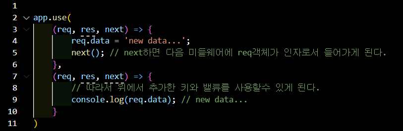